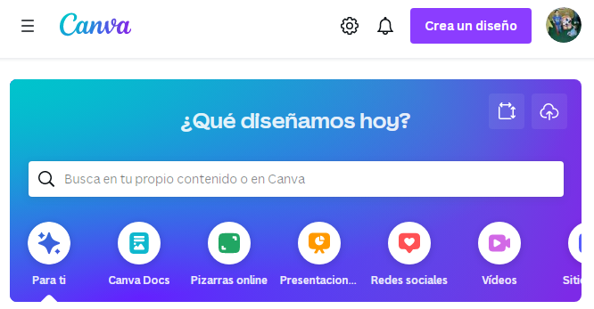

Herramientas para el diseño de presentaciones en línea
En la actualidad, existen diversas opciones de aplicaciones para hacer presentaciones digitales. Aunque algunas aplicaciones pueden tener costo, muchas de ellas son freemium o gratuitas, y solo requieren del registro en su plataforma. Algunas de las opciones más populares son:
Herramientas
Canva
Es una plataforma digital de servicio freemium que dispone de una gran variedad de plantillas personalizables para crear cualquier tipo de diseño gráfico, ya sea para formato impreso o digital.
Dirección web: http://www.canva.com
Genially
Es una herramienta en línea que permite crear diferentes tipos de contenidos digitales interactivos, como presentaciones, animaciones, infografías, juegos, cuestionarios y más, con una interfaz fácil de usar y sin necesidad de programación o conocimientos en diseño. Con Genially, es posible crear contenidos visuales y atractivos enriquecidos con elementos multimedia tales como videos, imágenes, sonidos y enlaces a otras páginas web.
Dirección web: https://genial.ly/es/
Obra publicada con Licencia Creative Commons Reconocimiento Compartir igual 4.0